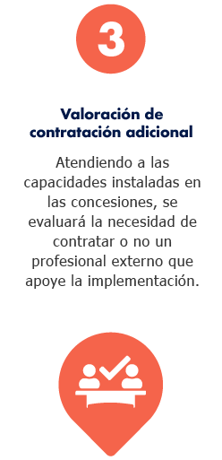
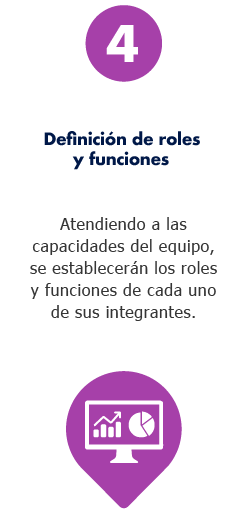

¡Preconstrucción y planificación!
Definir los perfiles profesionales y funciones del equipo que implementará la metodología, así como establecer el plan de trabajo
-

Objetivo - Tiempo - Recursos
-

Paso a paso
-

Herramientas
-


-
Objetivo de la fase:
Definir el pefil profesional y las funciones de quién o quiénes,desde las concesiones, orientarán la implementación de la metodología.
-
Tiempo estimado de ejecución:
30 días
-
Recursos requeridos:
-
Financieros: Se debe garantizar la disponibilidad presupuestal para la contratación del profesional que liderará esta metodología.
-
Técnicos: Es necesario contar con las herramientas necesarias para que la persona contratada pueda realizar su trabajo en condiciones óptimas. Por ejemplo, la creación de una cuenta de correo, la entrega de un computador, acceso a documentación, entre otros.
-
Humanos: Se necesitará apoyo de recursos humanos para adelantar procesos internos de revisión de hojas de vida, entrevistas y contratación.
-
-
Revisión de capacidades instaladas
Las concesiones establecerán los miembros del equipo que podrían aportar en la construcción e implementación de la medolología.
-
Definición de roles y funciones
Atendiendo a las capacidades del equipo, se establecerán los roles y funciones de cada uno de sus integrantes
-
Selección del equipo
Una vez identificados los posibles integrantes del equipo, se procederá a la revisión de hojas de vida y la realización de entrevistas.
-
Valoración de contratación adicional
Unidades instaladas en las conversiones, se evaluará la necesidad de controlar o no un profesional externo que apoye la implementación


¡Bien hecho!


- 
- 